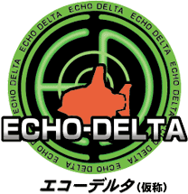
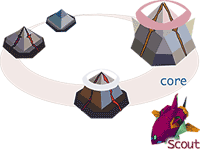
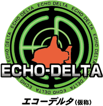

|  |
| エコーデルタ（仮称） |
| 2000年12月発売予定 |
| 予価：5,800円 |
| ジャンル：リアルタイムストラテジーゲーム |
| ● バックアップ機能付 |
| 制限時間は18分間。プレイヤーは海底に沈む船を救出する。戦略の数は無限にある。登場するマップも無限にある。すぐに熱中する。何度でも遊びたくなる。今までこんなゲームは無かった。触って気持ちいいシミュレーションゲームの登場。 |

|  |
| エコーデルタ（仮称） |
| 2000年12月発売予定 |
| 予価：5,800円 |
| ジャンル：リアルタイムストラテジーゲーム |
| ● バックアップ機能付 |
| 制限時間は18分間。プレイヤーは海底に沈む船を救出する。戦略の数は無限にある。登場するマップも無限にある。すぐに熱中する。何度でも遊びたくなる。今までこんなゲームは無かった。触って気持ちいいシミュレーションゲームの登場。 |
| 主人公は特殊潜水艇・スカウトに乗り込み海底を探索する。レーダーを回して海底に埋まった資源を採掘する。戦いの前に、まずは潜水艇を強化する。 |
| 集めた資源を使って海底にある生産基地（コア）を起動させる。コアに資源を投資するとその性能はさらにパワーアップする。周囲のガンナーで敵への攻撃準備を整える。 |
| 敵が増えてきたらガンナーをさらにカスタマイズ補強する。近距離の敵に強いショート砲、遠距離攻撃ができるロング砲。どちらを選択する？ |
| コアが資源を自動的に採掘する。今まで以上に集まる豊富な資源。この資源の再投資が可能になる。制限時間が近づいてきたら、遭難船を救出する。 |